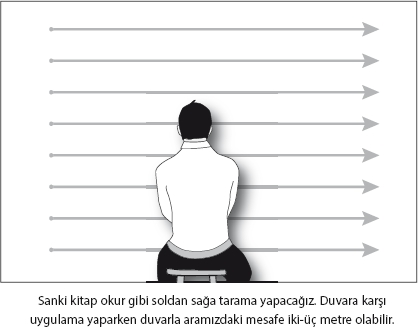
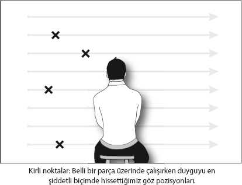
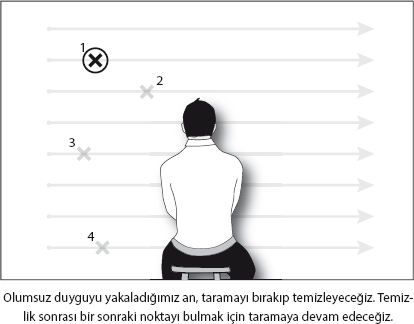

5. Göz pozisyonlarını taramak
Formatlamak için üzerinde uğraştığımız sorun, beyinde tek bir adreste bulunmuyor. Biz de gözlerimizi problemin beynimizdeki farklı adreslerini bulmak için kullanıyoruz.
Sorunu ve sorunun üzerinde çalışacağımız parçasını belirlemiş, NeuroFormat® duruşuna geçmiş, üzerinde çalıştığımız parçayı tetiklemeyi başarmışken göz pozisyonlarını da komple bir temizlik sağlamak için kullanıyoruz.
Nasıl mı?
Amacımız, tetiklediğimiz duygunun hangi göz pozisyonlarında daha yoğun olduğunu bulmak. Bunun için gözlerinizi görebildiğiniz tüm alanda yavaşça gezdireceksiniz. Bunu sistematik bir şekilde yapabilmek için SANKİ KİTAP OKUR GİBİ, önümüzde tüm görüş alanımızı kaplayan bir yazı varmış gibi tarama yapacağız. En üst satırdan başlayarak, yere kadar satır satır tarayacak, her satırda hep soldan sağa okur gibi çok yavaş bir hızda gideceğiz. Daha basit söylemek gerekirse, göz kaslarımızı zorlayarak, kafamızı sabit tutmak şartıyla, bakışımızın ulaşacağı her noktaya gitmeliyiz. En sol üst köşeden, en sağ alt köşeye kadar.

Göz pozisyonlarını, gözler hem açık hem de kapalı olarak uygulayabiliriz. Eğer gözler açık uygulamak gerekiyorsa düz bir duvara karşı uygulama yapmanız daha sistemli olmanızı sağlayacaktır. Ama duvara karşı olmanız elzem değil. Satır sayısı konuya göre 6-10 arası olabilir. Tek bir satırı taramanız 10 saniye civarında sürmeli.
Tarama yaparken olumsuz “tetikleyiciye” odaklanacak ve bundan dolayı, hangi göz noktasında “olumsuz duyguyu” daha fazla hissettiğinizi bulacaksınız.
OLUMSUZ ifadeleri sesli olarak tekrarlamanıza gerek yok. Oluşturduğunuz ifadeyi düşünmeniz yeterli. Ancak illa sesli tekrarlayacağım diyorsanız da size engel olmak istemem .
.
Taramayı bir an önce bitirmeye uğraşmayın. Amacımız, bitirmekten ziyade, hangi noktalarda olumsuz duygu olduğunu bulmak. Kötü hissettiğiniz noktayı bulduğunuz an, durmanız ve o noktadaki duyguyu temizlemeniz gerekiyor.
Noktalara bakmak = Duyguyu tetiklemek
Olumsuz bir soruna odaklanarak duygunun en yoğun biçimde hissedildiği göz pozisyonlarını bulma çabamız aslında tamamıyla sorunla yüzleşmekle ilgili. Sorunu bulup, onunla tamamıyla yüzleştikten sonra, beynimizden temizleyeceğiz. Sorunla yüzleşip temizlediğimizde, bilinçaltının alacağı önlemlere gerek kalmayacak ve böylece sorundan kurtulacağız!
Kapsamlı bir “formatlama” için, bir sonraki bölümde paylaşacağım gibi bu noktaları teker teker temizlemek gerekiyor.
Tarama sırasında kaç tane nokta bulacağınızın bir sınırı yok. Konuya göre 1-10 arası sayıda nokta bulmanız olası.
Tekniği uygularken, tarama sırasında kötü hissettiğiniz pozisyonların genelde hep aynı tarafta toplandığını göreceksiniz. Eğer duyguları hep sol tarafta hissediyorsanız, bu tüm çalışmalarda böyle devam edecek. Sağ taraf için de kural aynı...
Yukarıda ya da aşağıda duyguları yaşayabilirsiniz. Ancak, genelde duyguyu hissettiğiniz taraf pek değişmeyecektir. O yüzden taramaları duyguların çıktığı sağ ya da sol tarafta daha dikkatli gerçekleştirin.

Göz pozisyonlarını hissetmiyorum
Kişisel çalışmalarımda yaklaşık % 5’lik bir bölümün bir göz noktasından diğerine çok büyük bir fark hissetmediğine şahit oldum. Eğer bir sorun üzerinde çalışırken, bazı göz noktalarında daha yoğun duygular hissettiğinizi düşünmüyorsanız size bir kötü bir de iyi haberim var.
Kötü haber: NeuroFormat® sistemi ne yazık ki sizin için arkadaşlarınızda olduğu kadar hızlı çalışmayabilir.
Göz pozisyonlarının, aynı problemin beyindeki farklı adresleri olduğunu biraz önce sizinle paylaşmıştım. Göz taramalarında pek bir fark göremiyorsanız bunun birçok nedeni olabilir. Mesela:
Olumsuz duygulara yeterince odaklanmamış, onlara tam erişmemiş, yüzeye çıkarmamış olabilirsiniz. Yeterince denememiş olabilirsiniz.
Ya da beyniniz duygularınıza bu şekilde erişmenize izin vermiyor olabilir.
Sorunu tüm göz noktalarında temizlemek, tam anlamıyla “format” anlamına geliyor. Ve tüm noktaları “formatladığınız” zaman yaşayacağınız değişimin hızına ve etkisine siz bile inanamayabilirsiniz.
Kötü haberimizi özetlemek gerekirse, tüm göz noktalarında temizlik yapmazsanız, sorununuz üzerinde, diğer uygulayanlara göre daha uzun süre çalışmak zorunda kalabilirsiniz.
Şimdi iyi habere gelelim: Eğer yeterince denemiş olmanıza rağmen göz noktalarını hissetmiyorsanız da, bu dünyanın sonu değil. Bu gerçekle barışın. Kitap boyunca söylediklerimiz sizin için geçerli olmaya devam edecektir.
Eğer böyle bir durumdaysanız, göz tarama işlemini atlayacak, üzerinde çalıştığınız ifadenin hissettirdiği “olumsuz” duyguyu (göz noktalarında yoğunlaştırmaya çalışmadan) o an hissettiğiniz haliyle temizleyeceksiniz.
6. Duyguyu temizlemek
Şimdi bulduğumuz göz pozisyonunda hissettiğimiz olumsuz duyguyu temizleyeceğiz. Aşağıda bulacağınız temizleme işlemini, tarayarak bulduğunuz tüm göz noktalarında uygulayacaksınız. Evet, birer birer... SİZE GÜL BAHÇELERİ VAAT EDİYORUM ama kabul, biraz tekrar gerektiriyor.

Duyguyu hissetmek ve puanlamak
Başlamadan tek yapmanız gereken aşağıdaki sorulara çok kısa ve otomatik cevaplar vermek.
• Kötü duygu vücudunuzun neresinde?
• Nasıl bir duygu?
• Sıcak mı soğuk mu?
• 0-10 arasında yoğunluk açısından puan verseniz kaç puan verirsiniz? (10 = çok yoğun)
Cevap verme işleminde “robota bağlamanıza” gerek yok. Otomatik ve hızlı bir şekilde yapın bunu. Soruyu cevaplamayı unutursanız da merak etmeyin... Hiç önemli değil. Bu soruların tek amacı, negatif duyguya konsantre olmanızı sağlamak.
Temizlik için farklı yöntemler
Göz pozisyonlarında bulduğumuz olumsuz duyguyu temizlemek için üç farklı alternatifimiz var:
1- Olumsuz duyguyu tetikleyerek aynı noktaya bakmaya devam etmek.
Aslında, sadece kötü duyguyu hissederek aynı noktaya bakmakla da hissettiğiniz kötü duygu belli bir süre sonra temizlenecektir.
Uygulamada sadece bakarak temizleme genelde çok ileri düzeyde uygulanan bir yöntem. NeuroFormat® konusunda çok hızlı ve otomatikleşmeye başlamadan şimdilik bu seçeneği tercih etmeyin.
2- Olumsuz duyguyu tetiklerken, TAM TERSİ anlamda çok abartılı OLUMLU ifadeler kullanmak.
Aynı noktaya bakarak bir OLUMSUZ, bir OLUMLU şekilde ifadeleri değiştirerek bu duyguyu temizleyebilirsiniz.
Mesela, “Ben yıllardır yükselemediğim için iş hayatında çok başarısızım” ifadesinin yarattığı kötü duyguyu temizlerken, belli bir göz pozisyonunda bu hissin yoğunlaştığını bulduktan, yarattığı duyguyu vücudunuzda hissedip puanladıktan sonra, OLUMSUZ ifadenin sonuna aşağıdaki OLUMLU ifadeyi ekleyerek bu duyguyu temizleyebilirsiniz.
“Ben iş hayatında herkesin ayakta alkışladığı bir güneş gibi parlıyorum.”
Genelde kullanacağınız OLUMLU ifadelerin, abartılı olmaları ve benzetmeler içermesine gayret edin. Ancak, lütfen ama lütfen OLUMLU ifadelerin doğru olması için “beyninizi yemeyin”. Zira doğru OLUMLU ifadeler yok, sizde olumlu duygular yaratan her ifade yeterlidir.
3- NeuroFormat® Vuruşlarını kullanmak.
Bu teknik, olumsuz duyguyu hissederken, vücudun çeşitli nörolojik merkezlerine parmak uçlarıyla vurarak, duyguyu deşarj etme prensibine dayanıyor.
NeuroFormat® Vuruşlarının detaylarına biraz sonra gireceğiz. Teorik olarak daha fazla derinleşmeden gelin bir örnekle ilk çalışmamızı yapalım.
Neden OLUMSUZ ifadeler?
Çoğu kişisel gelişim akımı pozitif olmaktan, olumlu düşünmekten, olumlamalardan bahseder. Ancak, gelebildikleri yerler hep sınırlı kalır. Bu aslında kirleri halının altına süpürmekten pek de farklı değildir. Peki ya kirler halının altında, üzerinde yürüdüğümüz zaman bizi rahatsız edecek büyük taşlar kadarsa?
Daha önce ifade ettiğimiz gibi bizim asıl amacımız olumlu telkinler vermekten ziyade, beynimizdeki “kirlere” ulaşıp onları birer birer temizlemek. Biz, OLUMSUZ ifadeler üzerinden beynimizdeki bizi korumaya çalışan programlara, olumsuz duygulara erişiyoruz.
Daha önce verdiğimiz, taşı fırlatma örneğinden gidersek, taşı fırlatmak için önce elimize almamız gerekiyor. İşte biz OLUMSUZ ifadeler üzerinden taşı elimize alıyoruz. Ancak sadece elimize alabildiklerimizi fırlatıp atabiliyoruz. İşte bu yüzden OLUMSUZ ifadelerin mümkün olduğu kadar yoğun duygulara erişiyor olması, ne kadar başarılı olduğumuzu belirliyor.
Yaptığımız şey aslında pozitifleri enjekte etmekten ziyade, OLUMSUZLUKLARI TEMİZLEMEK. Zaten daha önce vurguladığımız gibi, beynimizin asıl amacı bizi hayatta tutmak. Beynimiz her zaman, bizi korumak için korkulara ve olumsuzluklara, neyi istediğimizden ziyade, neyden sakınmamız gerektiğine öncelik veriyor. İşte bu yüzden, negatifleri temizlemeden, olumlu düşünerek gerçekleştirebildiklerimiz hep sınırlı kalıyor.
NeuroFormat® sisteminin başarısı da zaten bu bakış açısında yatıyor. Tabii ki olumlu olmak çok güzel, ama geçmişin olumsuzluklarını temizlemek bizim için daha öncelikli...